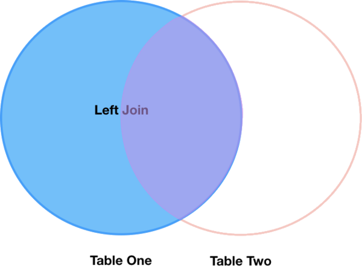

Combining DataFrames with Pandas
Overview
Teaching: 20 min
Exercises: 25 minQuestions
Can I work with data from multiple sources?
How can I combine data from different data sets?
Objectives
Combine data from multiple files into a single DataFrame using merge and concat.
Combine two DataFrames using a unique ID found in both DataFrames.
Employ
to_csvto export a DataFrame in CSV format.Join DataFrames using common fields (join keys).
In many “real world” situations, the data that we want to use come in multiple
files. We often need to combine these files into a single DataFrame to analyze
the data. The pandas package provides various methods for combining
DataFrames including
merge and concat.
To work through the examples below, we first need to load the species and surveys files into pandas DataFrames. In iPython:
import pandas as pd
surveys_df = pd.read_csv("data/surveys.csv",
keep_default_na=False, na_values=[""])
surveys_df
record_id month day year plot species sex hindfoot_length weight
0 1 7 16 1977 2 NA M 32 NaN
1 2 7 16 1977 3 NA M 33 NaN
2 3 7 16 1977 2 DM F 37 NaN
3 4 7 16 1977 7 DM M 36 NaN
4 5 7 16 1977 3 DM M 35 NaN
... ... ... ... ... ... ... ... ... ...
35544 35545 12 31 2002 15 AH NaN NaN NaN
35545 35546 12 31 2002 15 AH NaN NaN NaN
35546 35547 12 31 2002 10 RM F 15 14
35547 35548 12 31 2002 7 DO M 36 51
35548 35549 12 31 2002 5 NaN NaN NaN NaN
[35549 rows x 9 columns]
species_df = pd.read_csv("data/species.csv",
keep_default_na=False, na_values=[""])
species_df
species_id genus species taxa
0 AB Amphispiza bilineata Bird
1 AH Ammospermophilus harrisi Rodent
2 AS Ammodramus savannarum Bird
3 BA Baiomys taylori Rodent
4 CB Campylorhynchus brunneicapillus Bird
.. ... ... ... ...
49 UP Pipilo sp. Bird
50 UR Rodent sp. Rodent
51 US Sparrow sp. Bird
52 ZL Zonotrichia leucophrys Bird
53 ZM Zenaida macroura Bird
[54 rows x 4 columns]
Take note that the read_csv method we used can take some additional options which
we didn’t use previously. Many functions in Python have a set of options that
can be set by the user if needed. In this case, we have told pandas to assign
empty values in our CSV to NaN keep_default_na=False, na_values=[""].
More about all of the read_csv options here.
Concatenating DataFrames
We can use the concat function in pandas to append either columns or rows from
one DataFrame to another. Let’s grab two subsets of our data to see how this
works.
# Read in first 10 lines of surveys table
survey_sub = surveys_df.head(10)
# Grab the last 10 rows
survey_sub_last10 = surveys_df.tail(10)
# Reset the index values to the second dataframe appends properly
survey_sub_last10 = survey_sub_last10.reset_index(drop=True)
# drop=True option avoids adding new index column with old index values
When we concatenate DataFrames, we need to specify the axis. axis=0 tells
pandas to stack the second DataFrame UNDER the first one. It will automatically
detect whether the column names are the same and will stack accordingly.
axis=1 will stack the columns in the second DataFrame to the RIGHT of the
first DataFrame. To stack the data vertically, we need to make sure we have the
same columns and associated column format in both datasets. When we stack
horizontally, we want to make sure what we are doing makes sense (i.e. the data are
related in some way).
# Stack the DataFrames on top of each other
vertical_stack = pd.concat([survey_sub, survey_sub_last10], axis=0)
# Place the DataFrames side by side
horizontal_stack = pd.concat([survey_sub, survey_sub_last10], axis=1)
Row Index Values and Concat
Have a look at the vertical_stack dataframe? Notice anything unusual?
The row indexes for the two data frames survey_sub and survey_sub_last10
have been repeated. We can reindex the new dataframe using the reset_index() method.
Writing Out Data to CSV
We can use the to_csv command to do export a DataFrame in CSV format. Note that the code
below will by default save the data into the current working directory. We can
save it to a different folder by adding the foldername and a slash to the file
vertical_stack.to_csv('foldername/out.csv'). We use the ‘index=False’ so that
pandas doesn’t include the index number for each line.
# Write DataFrame to CSV
vertical_stack.to_csv('data_output/out.csv', index=False)
Check out your working directory to make sure the CSV wrote out properly, and that you can open it! If you want, try to bring it back into Python to make sure it imports properly.
# For kicks read our output back into Python and make sure all looks good
new_output = pd.read_csv('data_output/out.csv', keep_default_na=False, na_values=[""])
Challenge - Combine Data
In the data folder, there are two survey data files:
surveys2001.csvandsurveys2002.csv. Read the data into Python and combine the files to make one new data frame. Create a plot of average plot weight by year grouped by sex. Export your results as a CSV and make sure it reads back into Python properly.
Joining DataFrames
When we concatenated our DataFrames we simply added them to each other - stacking them either vertically or side by side. Another way to combine DataFrames is to use columns in each dataset that contain common values (a common unique id). Combining DataFrames using a common field is called “joining”. The columns containing the common values are called “join key(s)”. Joining DataFrames in this way is often useful when one DataFrame is a “lookup table” containing additional data that we want to include in the other.
NOTE: This process of joining tables is similar to what we do with tables in an SQL database.
For example, the species.csv file that we’ve been working with is a lookup
table. This table contains the genus, species and taxa code for 55 species. The
species code is unique for each line. These species are identified in our survey
data as well using the unique species code. Rather than adding 3 more columns
for the genus, species and taxa to each of the 35,549 line Survey data table, we
can maintain the shorter table with the species information. When we want to
access that information, we can create a query that joins the additional columns
of information to the Survey data.
Storing data in this way has many benefits including:
- It ensures consistency in the spelling of species attributes (genus, species and taxa) given each species is only entered once. Imagine the possibilities for spelling errors when entering the genus and species thousands of times!
- It also makes it easy for us to make changes to the species information once without having to find each instance of it in the larger survey data.
- It optimizes the size of our data.
Joining Two DataFrames
To better understand joins, let’s grab the first 10 lines of our data as a
subset to work with. We’ll use the .head method to do this. We’ll also read
in a subset of the species table.
# Read in first 10 lines of surveys table
survey_sub = surveys_df.head(10)
# Import a small subset of the species data designed for this part of the lesson.
# It is stored in the data folder.
species_sub = pd.read_csv('data/speciesSubset.csv', keep_default_na=False, na_values=[""])
In this example, species_sub is the lookup table containing genus, species, and
taxa names that we want to join with the data in survey_sub to produce a new
DataFrame that contains all of the columns from both species_df and
survey_df.
Identifying join keys
To identify appropriate join keys we first need to know which field(s) are shared between the files (DataFrames). We might inspect both DataFrames to identify these columns. If we are lucky, both DataFrames will have columns with the same name that also contain the same data. If we are less lucky, we need to identify a (differently-named) column in each DataFrame that contains the same information.
>>> species_sub.columns
Index([u'species_id', u'genus', u'species', u'taxa'], dtype='object')
>>> survey_sub.columns
Index([u'record_id', u'month', u'day', u'year', u'plot_id', u'species_id',
u'sex', u'hindfoot_length', u'weight'], dtype='object')
In our example, the join key is the column containing the two-letter species
identifier, which is called species_id.
Now that we know the fields with the common species ID attributes in each DataFrame, we are almost ready to join our data. However, since there are different types of joins, we also need to decide which type of join makes sense for our analysis.
Inner joins
The most common type of join is called an inner join. An inner join combines two DataFrames based on a join key and returns a new DataFrame that contains only those rows that have matching values in both of the original DataFrames.
Inner joins yield a DataFrame that contains only rows where the value being joined exists in BOTH tables. An example of an inner join, adapted from Jeff Atwood’s blogpost about SQL joins is below:

The pandas function for performing joins is called merge and an Inner join is
the default option:
merged_inner = pd.merge(left=survey_sub, right=species_sub, left_on='species_id', right_on='species_id')
# In this case `species_id` is the only column name in both dataframes, so if we skipped `left_on`
# And `right_on` arguments we would still get the same result
# What's the size of the output data?
merged_inner.shape
merged_inner
record_id month day year plot_id species_id sex hindfoot_length \
0 1 7 16 1977 2 NL M 32
1 2 7 16 1977 3 NL M 33
2 3 7 16 1977 2 DM F 37
3 4 7 16 1977 7 DM M 36
4 5 7 16 1977 3 DM M 35
5 8 7 16 1977 1 DM M 37
6 9 7 16 1977 1 DM F 34
7 7 7 16 1977 2 PE F NaN
weight genus species taxa
0 NaN Neotoma albigula Rodent
1 NaN Neotoma albigula Rodent
2 NaN Dipodomys merriami Rodent
3 NaN Dipodomys merriami Rodent
4 NaN Dipodomys merriami Rodent
5 NaN Dipodomys merriami Rodent
6 NaN Dipodomys merriami Rodent
7 NaN Peromyscus eremicus Rodent
The result of an inner join of survey_sub and species_sub is a new DataFrame
that contains the combined set of columns from survey_sub and species_sub. It
only contains rows that have two-letter species codes that are the same in
both the survey_sub and species_sub DataFrames. In other words, if a row in
survey_sub has a value of species_id that does not appear in the species_id
column of species, it will not be included in the DataFrame returned by an
inner join. Similarly, if a row in species_sub has a value of species_id
that does not appear in the species_id column of survey_sub, that row will not
be included in the DataFrame returned by an inner join.
The two DataFrames that we want to join are passed to the merge function using
the left and right argument. The left_on='species' argument tells merge
to use the species_id column as the join key from survey_sub (the left
DataFrame). Similarly , the right_on='species_id' argument tells merge to
use the species_id column as the join key from species_sub (the right
DataFrame). For inner joins, the order of the left and right arguments does
not matter.
The result merged_inner DataFrame contains all of the columns from survey_sub
(record id, month, day, etc.) as well as all the columns from species_sub
(species_id, genus, species, and taxa).
Notice that merged_inner has fewer rows than survey_sub. This is an
indication that there were rows in surveys_df with value(s) for species_id that
do not exist as value(s) for species_id in species_df.
Left joins
What if we want to add information from species_sub to survey_sub without
losing any of the information from survey_sub? In this case, we use a different
type of join called a “left outer join”, or a “left join”.
Like an inner join, a left join uses join keys to combine two DataFrames. Unlike
an inner join, a left join will return all of the rows from the left
DataFrame, even those rows whose join key(s) do not have values in the right
DataFrame. Rows in the left DataFrame that are missing values for the join
key(s) in the right DataFrame will simply have null (i.e., NaN or None) values
for those columns in the resulting joined DataFrame.
Note: a left join will still discard rows from the right DataFrame that do not
have values for the join key(s) in the left DataFrame.

A left join is performed in pandas by calling the same merge function used for
inner join, but using the how='left' argument:
merged_left = pd.merge(left=survey_sub, right=species_sub, how='left', left_on='species_id', right_on='species_id')
merged_left
record_id month day year plot_id species_id sex hindfoot_length \
0 1 7 16 1977 2 NL M 32
1 2 7 16 1977 3 NL M 33
2 3 7 16 1977 2 DM F 37
3 4 7 16 1977 7 DM M 36
4 5 7 16 1977 3 DM M 35
5 6 7 16 1977 1 PF M 14
6 7 7 16 1977 2 PE F NaN
7 8 7 16 1977 1 DM M 37
8 9 7 16 1977 1 DM F 34
9 10 7 16 1977 6 PF F 20
weight genus species taxa
0 NaN Neotoma albigula Rodent
1 NaN Neotoma albigula Rodent
2 NaN Dipodomys merriami Rodent
3 NaN Dipodomys merriami Rodent
4 NaN Dipodomys merriami Rodent
5 NaN NaN NaN NaN
6 NaN Peromyscus eremicus Rodent
7 NaN Dipodomys merriami Rodent
8 NaN Dipodomys merriami Rodent
9 NaN NaN NaN NaN
The result DataFrame from a left join (merged_left) looks very much like the
result DataFrame from an inner join (merged_inner) in terms of the columns it
contains. However, unlike merged_inner, merged_left contains the same
number of rows as the original survey_sub DataFrame. When we inspect
merged_left, we find there are rows where the information that should have
come from species_sub (i.e., species_id, genus, and taxa) is
missing (they contain NaN values):
merged_left[ pd.isnull(merged_left.genus) ]
record_id month day year plot_id species_id sex hindfoot_length \
5 6 7 16 1977 1 PF M 14
9 10 7 16 1977 6 PF F 20
weight genus species taxa
5 NaN NaN NaN NaN
9 NaN NaN NaN NaN
These rows are the ones where the value of species_id from survey_sub (in this
case, PF) does not occur in species_sub.
Other join types
The pandas merge function supports two other join types:
- Right (outer) join: Invoked by passing
how='right'as an argument. Similar to a left join, except all rows from therightDataFrame are kept, while rows from theleftDataFrame without matching join key(s) values are discarded. - Full (outer) join: Invoked by passing
how='outer'as an argument. This join type returns the all pairwise combinations of rows from both DataFrames; i.e., the result DataFrame willNaNwhere data is missing in one of the dataframes. This join type is very rarely used.
Final Challenges
Challenge - Distributions
Create a new DataFrame by joining the contents of the
surveys.csvandspecies.csvtables. Then calculate and plot the distribution of:
- taxa by plot
- taxa by sex by plot
Challenge - Diversity Index
- In the data folder, there is a
plots.csvfile that contains information about the type associated with each plot. Use that data to summarize the number of plots by plot type.Calculate a diversity index of your choice for control vs rodent exclosure plots. The index should consider both species abundance and number of species. You might choose to use the simple biodiversity index described here which calculates diversity as:
the number of species in the plot / the total number of individuals in the plot = Biodiversity index.
Key Points
Pandas’
mergeandconcatcan be used to combine subsets of a DataFrame, or even data from different files.
joinfunction combines DataFrames based on index or column.Joining two DataFrames can be done in multiple ways (left, right, and inner) depending on what data must be in the final DataFrame.
to_csvcan be used to write out DataFrames in CSV format.